Why media mix model calibration is useless without causal knowledge, presented at PyData DE Darmstadt 2025.
Author
Carlos Trujillo
Published
April 1, 2025
Introduction
Imagine you just shipped a shiny new Bayesian Media-Mix Model (MMM) that perfectly back-fits years of marketing data. A/B-lift experiments then tell you channel-A is worth €2.7 M, but your model insists it is worth €7 M. “Easy fix,” you think: calibrate the MMM with the lift tests—add an extra likelihood term, rerun, publish.
Yet the calibrated model still over/under-values the channel based on the experimental evidence. Looks like it can’t reconcile the experimental evidence with the data, and adding new calibration for other channels actually makes it worse.
That is the calibration trap: without causal structure the posterior can’t happily reconcile observations and clean experiments at the same time.
In this article we will build a PyMC MMM, add lift-test calibration, and then show—step-by-step—why calibration alone cannot save a misspecified causal story.
Why marketers love calibration
Ground-truth anchor. Lift tests are randomised, so their incremental effects are (almost) unbiased.
Sample-size boost. MMMs see every day and every channel; experiments see only a slice. Combining them promises lower variance.
Storytelling power. “Our model matches the experiments” is an executive-friendly sound-bite.
Calibration therefore feels like catching two Bayesian birds with one conjugate stone.
In simple terms, calibration appends one extra likelihood per experiment: for lift i we run the channel’s saturation curve at the pre-spend and post-spend levels, subtract the two, and call that result the model-expected incremental response for experiment i (a deterministic function of the saturation parameter vector \theta). We then treat the observed lift \Delta y_i as a Gamma-distributed draw whose mean is the absolute value of that model-expected increment and whose dispersion is the experiment’s reported standard error \sigma_i.
These independent \Gamma(\mu = |\text{model-expected increment}|, \sigma = \sigma_i) factors multiply into the original time-series likelihood, yielding a posterior where \theta is pulled toward values that keep every model-expected increment within the experimental noise band. In effect, each lift test imposes a Bayesian anchor that penalises any parameter setting whose predicted causal effect disagrees with ground-truth, while still allowing the full sales history to inform the remaining uncertainty.
Let’s see how this works in practice, by creating a synthetic dataset and fitting a simple MMM.
Getting started
We’ll use Pytensor to run our data-generation-process (DGP). Let’s set the seed for reproducibility, and define the number of observations, and finally add some default configurations for the notebook.
Code
import warningsimport pymc as pmimport arviz as azimport pytensor.tensor as ptfrom pytensor.graph import rewrite_graphimport preliz as pzimport numpy as npimport pandas as pdimport matplotlib.pyplot as pltimport seaborn as snsimport graphvizfrom pymc_marketing.mmm import GeometricAdstock, MichaelisMentenSaturation, MMMfrom pymc_extras.prior import PriorSEED =42n_observations =1050warnings.filterwarnings("ignore")# Set the styleaz.style.use("arviz-darkgrid")plt.rcParams["figure.figsize"] = [8, 4]plt.rcParams["figure.dpi"] =100plt.rcParams["axes.labelsize"] =6plt.rcParams["xtick.labelsize"] =6plt.rcParams["ytick.labelsize"] =6%config InlineBackend.figure_format ="retina"
/opt/anaconda3/envs/cetagostini_web/lib/python3.11/site-packages/preliz/ppls/pymc_io.py:12: FutureWarning: `pytensor.graph.basic.ancestors` was moved to `pytensor.graph.traversal.ancestors`. Calling it from the old location will fail in a future release.
from pytensor.graph.basic import ancestors
/opt/anaconda3/envs/cetagostini_web/lib/python3.11/site-packages/pymc_extras/model/marginal/graph_analysis.py:10: FutureWarning: `pytensor.graph.basic.io_toposort` was moved to `pytensor.graph.traversal.io_toposort`. Calling it from the old location will fail in a future release.
from pytensor.graph.basic import io_toposort
We can start by creating the spend vectors for each channel. These are the will define later the amount of impressions or exposition we get from each channel, which by the end will transform into sales.
Using the same logic we can create other components such as trend, noise, seasonality, and certain events.
Code
## Trendtrend = pt.vector("trend")# Create a sample input for the trendnp_trend = (np.linspace(start=0.0, stop=.50, num=n_observations) +.10) ** (.1/.4)## NOISE global_noise = pt.vector("global_noise")# Create a sample input for the noisepz_global_noise = pz.Normal(mu=0, sigma=.005).rvs(size=n_observations, random_state=SEED)# EVENTS EFFECTpt_event_signal = pt.vector("event_signal")pt_event_contributions = pt.vector("event_contributions")event_dates = ["24-12", "09-07"] # List of events as month-day stringsstd_devs = [25, 15] # List of standard deviations for each eventevents_coefficients = [.094, .018]signals_independent = []# Initialize the event effect arrayevent_signal = np.zeros(len(date_range))event_contributions = np.zeros(len(date_range))# Generate event signalsfor event, std_dev, event_coef inzip( event_dates, std_devs, events_coefficients, strict=False):# Find all occurrences of the event in the date range event_occurrences = date_range[date_range.strftime("%d-%m") == event]for occurrence in event_occurrences:# Calculate the time difference in days time_diff = (date_range - occurrence).days# Generate the Gaussian basis for the event _event_signal = np.exp(-0.5* (time_diff / std_dev) **2)# Add the event signal to the event effect signals_independent.append(_event_signal) event_signal += _event_signal event_contributions += _event_signal * event_coefnp_event_signal = event_signalnp_event_contributions = event_contributionsplt.plot(pz_global_noise, label='Global Noise')plt.plot(np_trend, label='Trend')plt.plot(np_event_signal, label='Event Contributions')plt.title('Components of the Time Series Model')plt.xlabel('Time (days)')plt.ylabel('Value')plt.legend()plt.grid(True, alpha=0.3)plt.show()
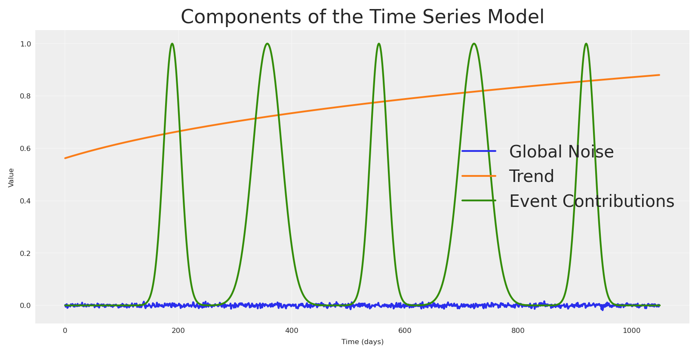
In order to make it more interesting, lets add a price variable. Usually, price creates more impact as it’s slower. The product price contribution function we’ll use is a diminishing returns function:
where \alpha represents the maximum contribution and \lambda is a scaling parameter that controls how quickly the contribution diminishes as price increases.
Code
def product_price_contribution(X, alpha, lam):return alpha / (1+ (X / lam))# Create a product price vector.product_price = pt.vector("product_price")product_price_alpha = pt.scalar("product_price_alpha")product_price_lam = pt.scalar("product_price_lam")# Create a sample input for the product pricepz_product_price = np.convolve( pz.Gamma(mu=.05, sigma=.02).rvs(size=n_observations, random_state=SEED), np.ones(14) /14, mode="same")pz_product_price[:14] = pz_product_price.mean()pz_product_price[-14:] = pz_product_price.mean()product_price_alpha_value =.08product_price_lam_value =.03# Direct contribution to the target.pt_product_price_contribution = product_price_contribution( product_price, product_price_alpha, product_price_lam)# plot the product price contributionfig, (ax1, ax2) = plt.subplots(1, 2)# Plot the raw price dataax1.plot(pz_product_price, color="green")ax1.set_title('Product Price')ax1.set_xlabel('Time (days)')ax1.set_ylabel('Price')ax1.grid(True, alpha=0.3)# Plot the price contributionprice_contribution = pt_product_price_contribution.eval({"product_price": pz_product_price,"product_price_alpha": product_price_alpha_value,"product_price_lam": product_price_lam_value})ax2.plot(price_contribution, color="black")ax2.set_title('Price Contribution')ax2.set_xlabel('Time (days)')ax2.set_ylabel('Contribution')ax2.grid(True, alpha=0.3)plt.tight_layout()plt.show()
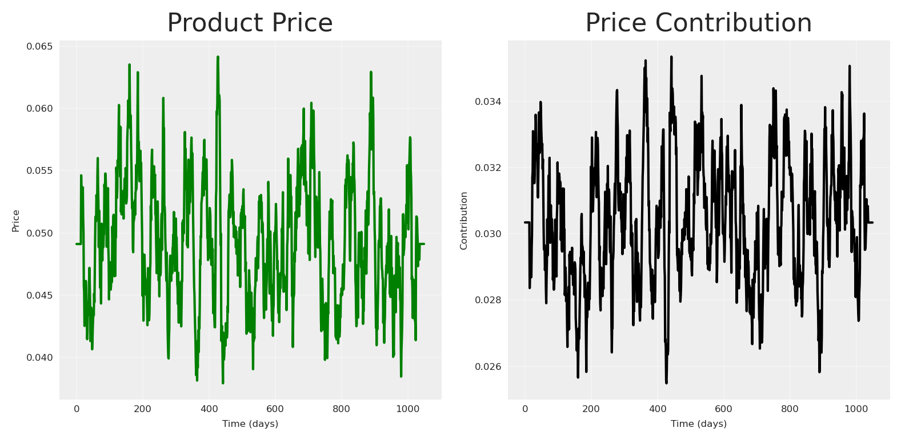
With all the principal components in place, all parent nodes we can start to write down our causal DAG to define the relationships we want to explain.
Code
# Plot causal graph of the vars x1, x2, x3, x4 using graphvizcdag_impressions = graphviz.Digraph(comment='Causal DAG for Impressions')cdag_impressions.node('spend_x1', 'Spend X1')cdag_impressions.node('spend_x2', 'Spend X2')cdag_impressions.node('spend_x3', 'Spend X3')cdag_impressions.node('spend_x4', 'Spend X4')cdag_impressions.node('events', 'Events')cdag_impressions.edge('spend_x1', 'impressions_x1')cdag_impressions.edge('spend_x2', 'impressions_x2')cdag_impressions.edge('spend_x3', 'impressions_x3')cdag_impressions.edge('spend_x4', 'impressions_x4')cdag_impressions.edge('impressions_x1', 'impressions_x3')cdag_impressions.edge('impressions_x2', 'impressions_x3')cdag_impressions.edge('impressions_x2', 'impressions_x4')cdag_impressions.edge('events', 'impressions_x2')cdag_impressions.edge('events', 'impressions_x3')cdag_impressions
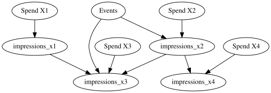
Once our causal graph is defined, we can start to write down in pytensor the structure and relationships.
Code
# Create a impressions vector, result of x1, x2, x3, x4. by some beta with daily values.# Define all parameters as PyTensor variablesbeta_x1 = pt.vector("beta_x1")impressions_x1 = spend_x1 * beta_x1beta_x2 = pt.vector("beta_x2")alpha_event_x2 = pt.scalar("alpha_event_x2")impressions_x2 = spend_x2 * beta_x2 + pt_event_signal * alpha_event_x2beta_x3 = pt.vector("beta_x3")alpha_event_x3 = pt.scalar("alpha_event_x3")alpha_x1_x3 = pt.scalar("alpha_x1_x3")alpha_x2_x3 = pt.scalar("alpha_x2_x3")impressions_x3 = spend_x3 * beta_x3 + pt_event_signal * alpha_event_x3 + ( impressions_x2 * alpha_x2_x3+ impressions_x1 * alpha_x1_x3)beta_x4 = pt.vector("beta_x4")alpha_x2_x4 = pt.scalar("alpha_x2_x4")impressions_x4 = spend_x4 * beta_x4 + impressions_x2 * alpha_x2_x4# Create sample values for the parameters (to be used in eval)pz_beta_x1 = pz.Beta(alpha=0.05, beta=.1).rvs(size=n_observations, random_state=SEED)pz_beta_x2 = pz.Beta(alpha=.015, beta=.05).rvs(size=n_observations, random_state=SEED)pz_alpha_event_x2 =0.015pz_beta_x3 = pz.Beta(alpha=.1, beta=.1).rvs(size=n_observations, random_state=SEED)pz_alpha_event_x3 =0.001pz_alpha_x1_x3 =0.005pz_alpha_x2_x3 =0.12pz_beta_x4 = pz.Beta(alpha=.125, beta=.05).rvs(size=n_observations, random_state=SEED)pz_alpha_x2_x4 =0.01# plot all impressions# Define dependencies for each variablex1_deps = {"beta_x1": pz_beta_x1,"spend_x1": pz_spend_x1,}x2_deps = {"beta_x2": pz_beta_x2,"spend_x2": pz_spend_x2,"alpha_event_x2": pz_alpha_event_x2,"event_signal": event_signal[:-1], # Slice to match 1050 length}# For x3, we need all dependencies from x1 and x2 plus its ownx3_deps = {"beta_x3": pz_beta_x3,"spend_x3": pz_spend_x3,"alpha_x2_x3": pz_alpha_x2_x3,"alpha_event_x3": pz_alpha_event_x3,"alpha_x1_x3": pz_alpha_x1_x3,**x1_deps,**x2_deps,}# For x4, we need dependencies from x2 plus its ownx4_deps = {"beta_x4": pz_beta_x4,"spend_x4": pz_spend_x4,"alpha_x2_x4": pz_alpha_x2_x4,**x2_deps,}# Plot each impression seriesfig, axs = plt.subplots(2, 2, sharex='row', sharey='row')# Channel 1axs[0, 0].plot(impressions_x1.eval(x1_deps), color='blue')axs[0, 0].set_title('Channel 1')axs[0, 0].set_ylabel('Impressions')# Channel 2axs[0, 1].plot(impressions_x2.eval(x2_deps), color='orange')axs[0, 1].set_title('Channel 2')# Channel 3axs[1, 0].plot(impressions_x3.eval(x3_deps), color='green')axs[1, 0].set_title('Channel 3')axs[1, 0].set_xlabel('Time')axs[1, 0].set_ylabel('Impressions')# Channel 4axs[1, 1].plot(impressions_x4.eval(x4_deps), color='red')axs[1, 1].set_title('Channel 4')axs[1, 1].set_xlabel('Time')plt.tight_layout()plt.show()
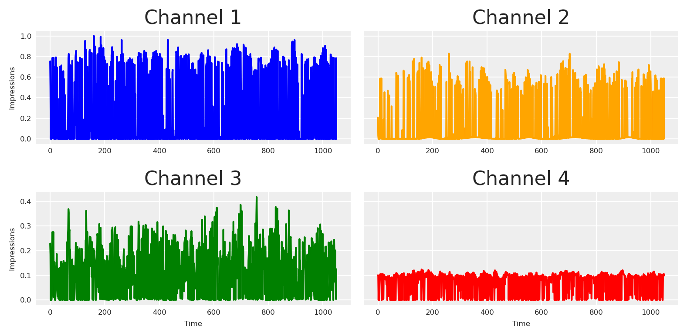
Visualizing the computational graph
In order to check we write down the process properly, we can ask PyTensor to print our structural causal model. This is not necessary for the analysis, but can be helpful for debugging and understanding the model structure.
Code
import pytensor.printing as printing# Plot the graph of our model using pytensorprinting.pydotprint(rewrite_graph(impressions_x4), outfile="images/impressions.png", var_with_name_simple=True)# Display the generated graphfrom IPython.display import ImageImage(filename="images/impressions.png")
The output file is available at images/impressions.png
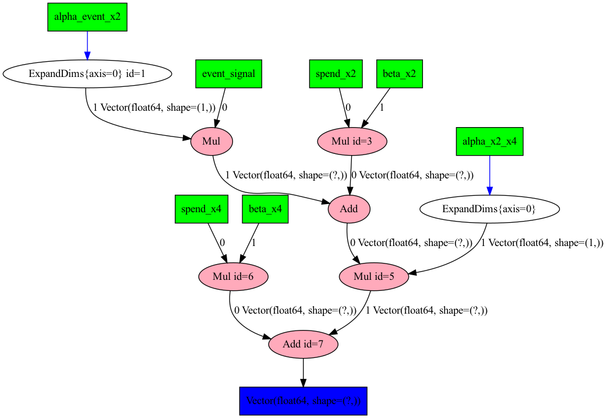
If, you don’t like to see the graphical version, you can ask for the string representation.
Code
# dprint the target_varrewrite_graph(impressions_x4).dprint(depth=5);
Now, let’s define our forward pass - how media exposure actually impacts our target variable. In marketing, we typically see two key effects: saturation (diminishing returns) and lagging (delayed impact). We’ll model these using the Michaelis-Menten function for saturation and Geometric Adstock for the lagging effects.
With all of the following in place, we can define the causal DAG for the target variable and the structural equation as the sum of all previous variables.
Code
# Plot graphviz causal dag for the target_var# Create a Graphviz objectdot = graphviz.Digraph(comment='Causal DAG for Target Variable')# Add nodes for each variabledot.node('spend_x1', 'Spend X1')dot.node('spend_x2', 'Spend X2')dot.node('spend_x3', 'Spend X3')dot.node('spend_x4', 'Spend X4')dot.node('trend', 'Trend')dot.node('global_noise', 'Global Noise')dot.node('event_contributions', 'Events')dot.node('product_price_contribution', 'Product Price Contribution')dot.edge('spend_x1', 'impressions_x1')dot.edge('spend_x2', 'impressions_x2')dot.edge('spend_x3', 'impressions_x3')dot.edge('spend_x4', 'impressions_x4')dot.edge('impressions_x1', 'impressions_x3')dot.edge('impressions_x2', 'impressions_x3')dot.edge('impressions_x2', 'impressions_x4')dot.edge('event_contributions', 'impressions_x2')dot.edge('event_contributions', 'impressions_x3')dot.edge('trend', 'target_var')dot.edge('global_noise', 'target_var')dot.edge('event_contributions', 'target_var')dot.edge('product_price_contribution', 'target_var')dot.edge('impressions_x2', 'target_var')dot.edge('impressions_x3', 'target_var')dot.edge('impressions_x4', 'target_var')# Render the graphdot
If we don’t think in a causal way, we will probably just say, “lets add all to the blender”.
Code
# Building priors for adstock and saturationadstock_priors = {"alpha": Prior("Beta", alpha=1, beta=1, dims="channel"),}adstock = GeometricAdstock(l_max=28, priors=adstock_priors)saturation_priors = {"lam": Prior("Gamma", mu=2, sigma=1, dims="channel", ),"alpha": Prior("Gamma", mu=.5, sigma=.5, dims="channel", ),}saturation = MichaelisMentenSaturation(priors=saturation_priors)# Split data into train and test setstrain_idx =879X_train = data.iloc[:train_idx].drop(columns=["target_var"])X_test = data.iloc[train_idx:].drop(columns=["target_var"])y_train = data.iloc[:train_idx]["target_var"]y_test = data.iloc[train_idx:]["target_var"]control_columns = ["event_2020_09", "event_2020_12", "event_2021_09", "event_2021_12", "event_2022_09","trend"]channel_columns = [ col for col in X_train.columns if col notin control_columns and col !="date"]# Model configmodel_config = {"likelihood": Prior("TruncatedNormal", lower=0, sigma=Prior("HalfNormal", sigma=1), dims="date", ),}# sampling options for PyMCsample_kwargs = {"tune": 1000,"draws": 500,"chains": 4,"random_seed": 42,"target_accept": 0.94,}non_causal_mmm = MMM( date_column="date", channel_columns=channel_columns, control_columns=control_columns, adstock=adstock, saturation=saturation, model_config=model_config, sampler_config=sample_kwargs)non_causal_mmm.build_model(X_train, y_train)
Building the model
All PyMC models are structural causal models, which means they represent the causal generative process of the data. We can visualize this process through a Directed Acyclic Graph (DAG) that shows how variables influence each other in the model.
Initializing NUTS using jitter+adapt_diag...
Multiprocess sampling (4 chains in 4 jobs)
NUTS: [intercept, adstock_alpha, saturation_alpha, saturation_lam, gamma_control, y_sigma]
Sampling 4 chains for 1_000 tune and 500 draw iterations (4_000 + 2_000 draws total) took 79 seconds.
There were 13 divergences after tuning. Increase `target_accept` or reparameterize.
The rhat statistic is larger than 1.01 for some parameters. This indicates problems during sampling. See https://arxiv.org/abs/1903.08008 for details
The effective sample size per chain is smaller than 100 for some parameters. A higher number is needed for reliable rhat and ess computation. See https://arxiv.org/abs/1903.08008 for details
We are happy with our model, we don’t get any divergencies, and the sampling looks good.
Code
# Number of diverging samplesprint(f"Total divergencies: {non_causal_mmm.idata['sample_stats']['diverging'].sum().item()}")az.summary( data=non_causal_mmm.fit_result, var_names=["intercept","y_sigma","saturation_alpha","saturation_lam","adstock_alpha", ],)
Total divergencies: 13
mean
sd
hdi_3%
hdi_97%
mcse_mean
mcse_sd
ess_bulk
ess_tail
r_hat
intercept
0.458
0.006
0.452
0.464
0.001
0.003
138.0
24.0
1.03
y_sigma
0.009
0.000
0.008
0.009
0.000
0.000
2595.0
1556.0
1.00
saturation_alpha[impressions_x1]
0.067
0.030
0.023
0.123
0.001
0.001
731.0
1134.0
1.00
saturation_alpha[impressions_x2]
0.142
0.007
0.129
0.154
0.000
0.000
887.0
1021.0
1.00
saturation_alpha[impressions_x3]
0.502
0.019
0.466
0.537
0.001
0.000
1100.0
1231.0
1.00
saturation_alpha[impressions_x4]
0.098
0.024
0.061
0.146
0.001
0.001
1016.0
1100.0
1.01
saturation_lam[impressions_x1]
2.101
1.194
0.024
4.019
0.086
0.045
126.0
24.0
1.03
saturation_lam[impressions_x2]
0.446
0.046
0.358
0.532
0.002
0.001
923.0
1179.0
1.00
saturation_lam[impressions_x3]
1.294
0.074
1.166
1.441
0.002
0.002
1086.0
1211.0
1.01
saturation_lam[impressions_x4]
1.962
0.746
0.783
3.370
0.024
0.021
1045.0
1065.0
1.00
adstock_alpha[impressions_x1]
0.993
0.007
0.980
1.000
0.000
0.000
1055.0
697.0
1.00
adstock_alpha[impressions_x2]
0.190
0.011
0.170
0.211
0.000
0.000
1059.0
1156.0
1.01
adstock_alpha[impressions_x3]
0.193
0.006
0.183
0.203
0.000
0.000
1703.0
1480.0
1.00
adstock_alpha[impressions_x4]
0.218
0.031
0.160
0.274
0.001
0.001
1833.0
1255.0
1.00
If our model has a correct understanding of causality, we can use it to perform a do-calculus to estimate the effect of our channel, using out of sample (sampling from the posterior). Mathematically, we want to compute the causal effect as the difference between two interventions: P(Y|do(X=x)) - P(Y|do(X=0))
This should allows us to isolate the causal impact of our marketing channels on the outcome variable.
Now that we have both posteriors, we can compute the difference between the period with the index 880-890 and plot the causal effect and the cumulative causal effect.
Code
# Calculate the causal effect as the difference between interventionsx2_causal_effect = (y_do_x2_zero - y_do_x2).y# Get dates from the coordinates for x-axisdates = x2_causal_effect.coords['date'].values[:100] # Take only first 100 days# Plot the causal effectplt.subplot(1, 2, 1)# Calculate mean and quantilesmean_effect = x2_causal_effect.mean(dim="sample")[:100]plt.plot(dates, mean_effect)plt.title("Causal Effect of Channel X2", fontsize=6)plt.xlabel("Date", fontsize=6)plt.ylabel("Effect", fontsize=6)plt.tick_params(axis='both', which='major', labelsize=4)plt.legend(fontsize=6)# Plot the cumulative causal effectplt.subplot(1, 2, 2)# For cumulative effect, compute quantiles directly from cumulative sumscum_effect = x2_causal_effect.cumsum(dim="date")cum_mean = cum_effect.mean(dim="sample")[:100]plt.plot(dates, cum_mean)plt.title("Cumulative Causal Effect of Channel X2", fontsize=6)plt.xlabel("Date", fontsize=6)plt.ylabel("Cumulative Effect", fontsize=6)plt.tick_params(axis='both', which='major', labelsize=4)plt.legend(fontsize=6)plt.tight_layout()
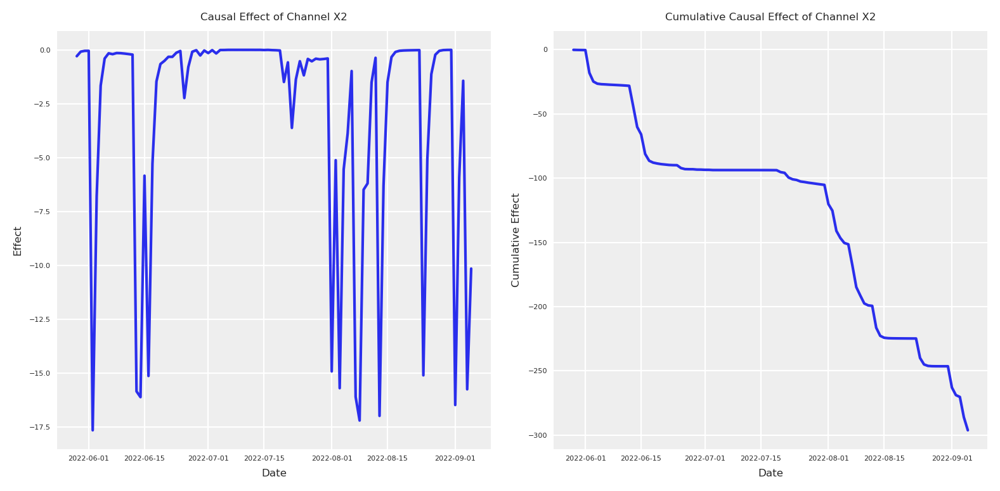
In reality, in order to validate the following estimated effect, we’ll need to run an actual experiment. Because we did the data generation process we can run this actual experiment to compare.
Code
# Create an intervened spend_x2 with zeros between index 880 and 980intervened_spend_x2 = pz_spend_x2.copy()intervened_spend_x2[880:980] =0# Evaluate target variable with the interventionnp_target_var_x2_zero = target_var.eval({"spend_x4": pz_spend_x4,"spend_x3": pz_spend_x3,"spend_x2": intervened_spend_x2,"spend_x1": pz_spend_x1,"event_signal": event_signal[:-1],"alpha_event_x2": pz_alpha_event_x2,"alpha_event_x3": pz_alpha_event_x3,"alpha_x1_x3": pz_alpha_x1_x3,"alpha_x2_x3": pz_alpha_x2_x3,"alpha_x2_x4": pz_alpha_x2_x4,"beta_x2": pz_beta_x2,"beta_x3": pz_beta_x3,"beta_x4": pz_beta_x4,"beta_x1": pz_beta_x1,"saturation_lam_x2": .5,"saturation_alpha_x2": .2,"saturation_lam_x3": .7,"saturation_alpha_x3": .7,"saturation_lam_x4": .2,"saturation_alpha_x4": .1,"global_adstock_alpha": .2,"product_price": pz_product_price,"event_contributions": np_event_contributions[:-1],"product_price_alpha": product_price_alpha_value,"product_price_lam": product_price_lam_value,"trend": np_trend,"global_noise": pz_global_noise,})# x2 total effect y | do(x2=>1) - y | do(x2=0)x2_intervention_real_effect = np_target_var_x2_zero - np_target_varx2_intervention_real_cumulative_effect = np.cumsum(x2_intervention_real_effect)# Plot both the intervention effect and cumulative effectplt.subplot(1, 2, 1)# Plot the daily effectdaily_effect = x2_intervention_real_effect[880:980] * scaler_factor_for_allplt.plot(dates, daily_effect)plt.title("Causal Effect of Channel X2", fontsize=6)plt.xlabel("Date", fontsize=6)plt.ylabel("Effect", fontsize=6)plt.tick_params(axis='both', which='major', labelsize=4)plt.legend(fontsize=6)# Plot the cumulative causal effectplt.subplot(1, 2, 2)cumulative_effect = x2_intervention_real_cumulative_effect[880:980] * scaler_factor_for_allplt.plot(dates, cumulative_effect)plt.title("Cumulative Causal Effect of Channel X2", fontsize=6)plt.xlabel("Date", fontsize=6)plt.ylabel("Cumulative Effect", fontsize=6)plt.tick_params(axis='both', which='major', labelsize=4)plt.legend(fontsize=6)plt.tight_layout()plt.show()
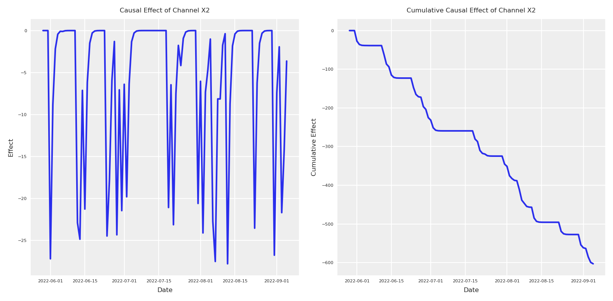
How does compare to the recovered effect? Let’s observe! 👀
Code
# Create a figure to compare real effects with estimated effects# Plot 1: Compare daily effectsplt.subplot(2, 1, 1)plt.plot(dates, daily_effect, label='Real Effect', color='blue')plt.plot(dates, mean_effect, label='Estimated Effect', color='red', linestyle='--')plt.title("Comparison of Real vs Estimated Causal Effects of Channel X2", fontsize=10)plt.xlabel("Date", fontsize=8)plt.ylabel("Daily Effect", fontsize=8)plt.tick_params(axis='both', which='major', labelsize=6)plt.legend(fontsize=8)plt.grid(True, alpha=0.3)# Plot 2: Compare cumulative effectsplt.subplot(2, 1, 2)plt.plot(dates, cumulative_effect, label='Real Cumulative Effect', color='blue')plt.plot(dates, cum_mean, label='Estimated Cumulative Effect', color='red', linestyle='--')plt.title("Comparison of Real vs Estimated Cumulative Causal Effects of Channel X2", fontsize=10)plt.xlabel("Date", fontsize=8)plt.ylabel("Cumulative Effect", fontsize=8)plt.tick_params(axis='both', which='major', labelsize=6)plt.legend(fontsize=8)plt.grid(True, alpha=0.3)plt.tight_layout()plt.show()
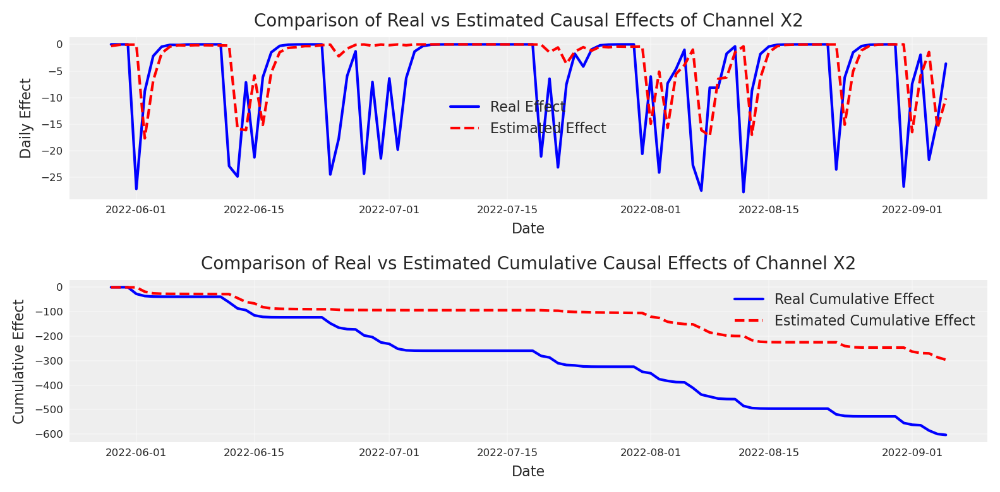
The initial model have been under estimating the effect of X2. We can see the model was thinking we’ll loosing almost none users when in reality wi’ll loose around 600 in total. Maybe we did something wrong? Are we maybe the wrong causal question?
That doesn’t matter, we have calibration! 🤪
Lets compute the observable delta in Y and observable delta in X and use it for calibration.
As we can see a new observational point have been added to our data. This new point must be satisfied as the rest of our data, pooling parameter into a new direction.
Note
In a Bayesian model, each observation—whether it is a daily data point y_t or a lift measurement \Delta y—contributes a term to the likelihood. The posterior arises from the product of all these likelihood terms and the prior(s). In other words, theres no actual difference between priors and data, they both carry the same weight and multiply in the numerator of Bayes theorem. There’s no discrete “decision” about which part of the data (or which prior) to weight more; it all goes into the same log‐posterior function. The sampling or optimization algorithm (MCMC, variational inference, etc.) explores the parameter space in proportion to the posterior probability (which is prior × likelihood). Whichever parameters jointly give higher posterior density get visited more often by the sampler.
Initializing NUTS using jitter+adapt_diag...
Multiprocess sampling (4 chains in 4 jobs)
NUTS: [intercept, adstock_alpha, saturation_alpha, saturation_lam, gamma_control, y_sigma]
Sampling 4 chains for 1_000 tune and 500 draw iterations (4_000 + 2_000 draws total) took 173 seconds.
The rhat statistic is larger than 1.01 for some parameters. This indicates problems during sampling. See https://arxiv.org/abs/1903.08008 for details
The effective sample size per chain is smaller than 100 for some parameters. A higher number is needed for reliable rhat and ess computation. See https://arxiv.org/abs/1903.08008 for details
Now that our model is ready, we can check the new estimated effect.
Code
y_do_x2_zero_second_model = non_causal_mmm2.idata.posterior_predictive.copy()y_do_x2_second_model = non_causal_mmm2.sample_posterior_predictive( data.drop(columns=["target_var"]), extend_idata=False, include_last_observations=False, combined=False, random_seed=42)# Calculate the causal effect as the difference between interventionsx2_causal_effect_second_model = (y_do_x2_zero_second_model.y - y_do_x2_second_model.y).isel(date=slice(880, 980))# Plot the causal effectplt.subplot(1, 2, 1)# Calculate mean and quantilesmean_effect_second_model = x2_causal_effect_second_model.mean(dim=["chain","draw"])plt.plot(x2_causal_effect_second_model.coords["date"].values, mean_effect_second_model)plt.title("Causal Effect of Channel X2", fontsize=6)plt.xlabel("Date", fontsize=6)plt.ylabel("Effect", fontsize=6)plt.tick_params(axis='both', which='major', labelsize=4)plt.legend(fontsize=6)# Plot the cumulative causal effectplt.subplot(1, 2, 2)# For cumulative effect, compute quantiles directly from cumulative sumscum_effect_second_model = x2_causal_effect_second_model.cumsum(dim="date")cum_mean_second_model = cum_effect_second_model.mean(dim=["chain","draw"])plt.plot(x2_causal_effect_second_model.coords["date"].values, cum_mean_second_model)plt.title("Cumulative Causal Effect of Channel X2", fontsize=6)plt.xlabel("Date", fontsize=6)plt.ylabel("Cumulative Effect", fontsize=6)plt.tick_params(axis='both', which='major', labelsize=4)plt.legend(fontsize=6)plt.tight_layout()
Sampling: [lift_measurements, y]
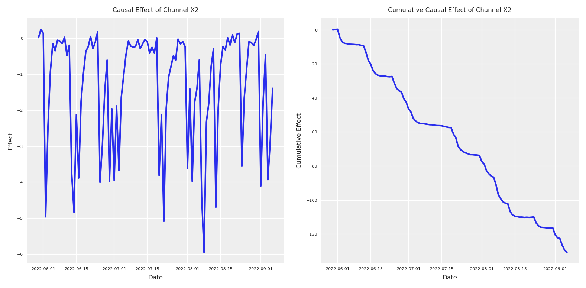
As you can see the effect looks fully different. The size is 1000X higher than before. Let’s compare!
Code
# Create a figure to compare real effects with estimated effects# Plot 1: Compare daily effectsplt.subplot(2, 1, 1)plt.plot(dates, daily_effect, label='Real Effect', color='blue')plt.plot(dates, mean_effect, label='Estimated Effect', color='red', linestyle='--')plt.plot(x2_causal_effect_second_model.coords["date"].values, mean_effect_second_model, label='Estimated Effect (2)', color='orange', linestyle='--')plt.title("Comparison of Real vs Estimated Causal Effects of Channel X2", fontsize=10)plt.xlabel("Date", fontsize=8)plt.ylabel("Daily Effect", fontsize=8)plt.tick_params(axis='both', which='major', labelsize=6)plt.legend(fontsize=8)plt.grid(True, alpha=0.3)# Plot 2: Compare cumulative effectsplt.subplot(2, 1, 2)plt.plot(dates, cumulative_effect, label='Real Cumulative Effect', color='blue')plt.plot(dates, cum_mean, label='Estimated Cumulative Effect', color='red', linestyle='--')plt.plot(x2_causal_effect_second_model.coords["date"].values, cum_mean_second_model, label='Estimated Cumulative Effect (2)', color='orange', linestyle='--')plt.title("Comparison of Real vs Estimated Cumulative Causal Effects of Channel X2", fontsize=10)plt.xlabel("Date", fontsize=8)plt.ylabel("Cumulative Effect", fontsize=8)plt.tick_params(axis='both', which='major', labelsize=6)plt.legend(fontsize=8)plt.grid(True, alpha=0.3)plt.tight_layout()plt.show()
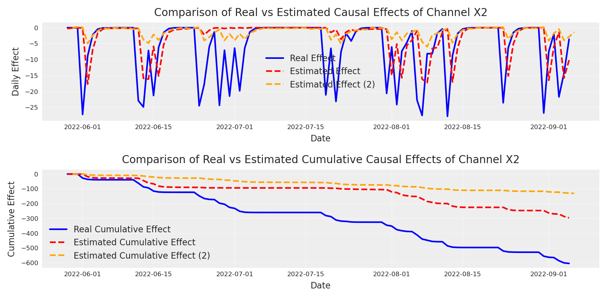
As expected the new observation makes the model add more credit to X2 but this came with the price of an overestimation of the true impact. Meanwhile, it was true that X2 impact was bigger than the original one, the second model absorbe all the variability possibly explain by other variables such as X1, X3 and bring a 1000X more extra impact, with a very tight posterior.
Code
# plot the recovered mean daily contribution as distribution.channels_contribution_original_scale_model1 = non_causal_mmm.compute_channel_contribution_original_scale()channels_contribution_original_scale_model2 = non_causal_mmm2.compute_channel_contribution_original_scale()_dist1 = channels_contribution_original_scale_model1.isel(date=slice(0, 800)).mean( dim=["date"]).sel(channel="impressions_x2").values.flatten()_dist2 = channels_contribution_original_scale_model2.isel(date=slice(0, 800)).mean( dim=["date"]).sel(channel="impressions_x2").values.flatten()# First subplot for Model 1plt.subplot(1, 2, 1)sns.kdeplot(_dist1, shade=True, label="Model 1", bw_adjust=4.5)plt.title("Distribution of Channel X2 Contribution - Model 1", fontsize=12)plt.xlabel("Contribution Value", fontsize=10)plt.ylabel("Density", fontsize=10)plt.grid(True, alpha=0.3)plt.legend(fontsize=9)# Second subplot for Model 2plt.subplot(1, 2, 2)sns.kdeplot(_dist2, shade=True, label="Model 2", bw_adjust=4.5, color="orange")plt.title("Distribution of Channel X2 Contribution - Model 2", fontsize=12)plt.xlabel("Contribution Value", fontsize=10)plt.ylabel("Density", fontsize=10)plt.grid(True, alpha=0.3)plt.legend(fontsize=9)plt.tight_layout()plt.show()
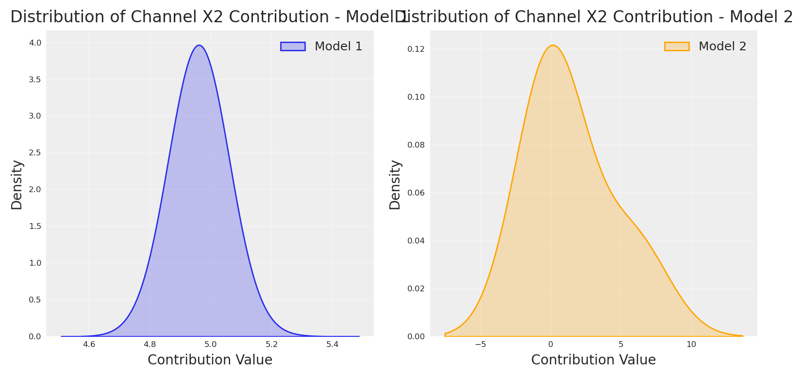
The Danger of Tight Posteriors
It’s important to note that a tight posterior distribution (like we see in Model 2) should never be understood as the model being more correct or certain about the true causal effect. This is a common misconception in Bayesian analysis.
A tight posterior simply means the model is very confident in its estimates given the data and prior assumptions it has, but says nothing about whether those assumptions are correct. In this case, the addition of the lift test measurement has created a model that is very confident in an incorrect answer.
This illustrates an important principle in causal inference and Bayesian modeling: precision is not the same as accuracy. A model can be precisely wrong - having a narrow posterior around an incorrect value. This often happens when:
The model structure doesn’t match the true causal process
Important confounders are omitted
The priors or likelihood are misspecified
Why all the following happened? lets take a look to the graph.
Code
dot
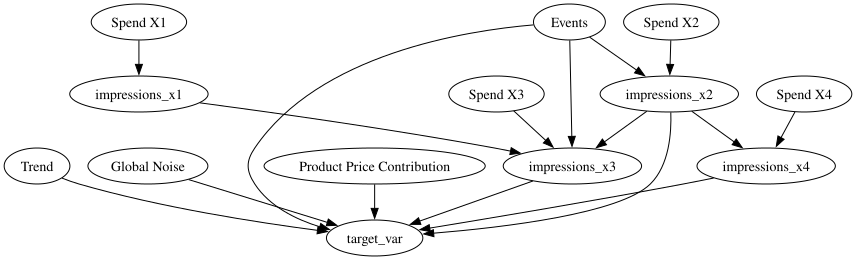
This DAG shows:
Direct Spend-to-Impression Relationships: Each spend variable (X1-X4) directly influences its corresponding impression variable.
Cross-Channel Effects:
Impressions from X1 influence impressions from X3
Impressions from X2 influence both X3 and X4 impressions
Events influence impressions for X2 and X3
If we were to build a naive regression model including all variables (X1, X2, X3, X4), we would encounter significant estimation problems, particularly for X2. According to Pearl’s causal theory.
1. Collider Bias
In our graph, X2 influences X3 and X4, which both influence the target variable. This creates a collider structure where conditioning on x1 variable because induces a spurious correlation between X2, X3. This violates the independence assumptions of standard regression.
2. Mediator Effects
X2 has both direct effects on the target variable and indirect effects through X3 and X4. A naive regression would conflate these paths, leading to inconsistent estimates of X2’s true total causal effect.
3. Confounding from Events
Events influence both X2 impressions and the target variable directly. Without properly accounting for this common cause, the estimate for X2 will capture some of the effect that actually comes from events.
All the above means, in order to estimate the effect of X2 we need to address the primal causal questions.
4. Minimal Adjustment Set for X2
To estimate the total causal effect of X2 on the target variable, we need to identify the minimal adjustment set that blocks all non-causal paths while preserving the causal paths. According to Pearl’s backdoor criterion, we must control for any confounders (common causes) while avoiding adjusting for colliders or mediators. In our DAG, the minimal adjustment set for estimating X2’s total effect would include Events (as it’s a confounder affecting both X2 and the target) and Spend X1 (as it influences the target through X3, creating a backdoor path). We should not adjust for impressions_x3 or impressions_x4, as these are mediators through which X2 partially exerts its effect on the target variable. Nevertheless, events are a cofounder of X2, meaning, we need to control for them if we want to get the estimates right on spot.
The proper identification of this minimal adjustment set is crucial for unbiased estimation. If we control for too few variables, confounding bias remains. If we control for mediators, we block part of the causal effect we’re trying to measure. This highlights why structural causal models are superior to naive regression approaches - they allow us to explicitly model the causal pathways and make appropriate adjustments based on causal reasoning rather than statistical correlation. By conditioning only on the minimal adjustment set, we can obtain a consistent estimate of X2’s total causal effect, including both its direct impact and indirect effects through other channels.
So, let’s see what happen if we apply causal theory 😃
Now, lets repeat again the estimation of the effect when X2 is zero.
Code
X_test_x2_zero = X_test.copy()X_test_x2_zero["impressions_x2"].iloc[:100] =0y_do_x2_zero_causal = causal_mmm.sample_posterior_predictive( X_test_x2_zero, extend_idata=False, include_last_observations=True, random_seed=42)y_do_x2_causal = causal_mmm.sample_posterior_predictive( X_test, extend_idata=False, include_last_observations=True, random_seed=42)# Calculate the causal effect as the difference between interventionsx2_causal_effect_causal = (y_do_x2_zero_causal - y_do_x2_causal).y# Get dates from the coordinates for x-axisdates = x2_causal_effect_causal.coords['date'].values[:100] # Take only first 100 days# Calculate mean and quantilesmean_effect = x2_causal_effect_causal.mean(dim="sample")[:100]cum_effect = x2_causal_effect_causal.cumsum(dim="date")cum_mean = cum_effect.mean(dim="sample")[:100]# Plot 1: Compare daily effectsplt.subplot(2, 1, 1)plt.plot(dates, daily_effect, label='Real Effect', color='blue')plt.plot(dates, mean_effect, label='Estimated Effect', color='red', linestyle='--')plt.title("Comparison of Real vs Estimated Causal Effects of Channel X2", fontsize=10)plt.xlabel("Date", fontsize=8)plt.ylabel("Daily Effect", fontsize=8)plt.tick_params(axis='both', which='major', labelsize=6)plt.legend(fontsize=8)plt.grid(True, alpha=0.3)# Plot 2: Compare cumulative effectsplt.subplot(2, 1, 2)plt.plot(dates, cumulative_effect, label='Real Cumulative Effect', color='blue')plt.plot(dates, cum_mean, label='Estimated Cumulative Effect', color='red', linestyle='--')plt.title("Comparison of Real vs Estimated Cumulative Causal Effects of Channel X2", fontsize=10)plt.xlabel("Date", fontsize=8)plt.ylabel("Cumulative Effect", fontsize=8)plt.tick_params(axis='both', which='major', labelsize=6)plt.legend(fontsize=8)plt.grid(True, alpha=0.3)plt.tight_layout()plt.show()
Sampling: [y]
Sampling: [y]
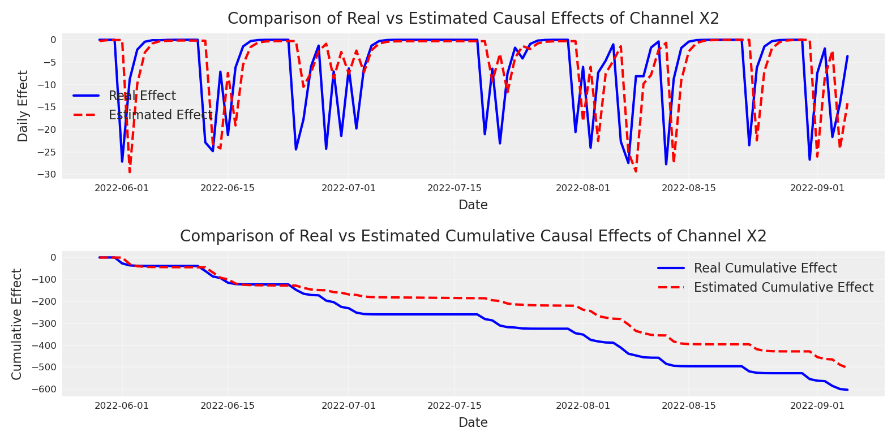
Great, as expected the true causal effect for X2 was recovered, and its possible to prove with an experiment. This just prove that maths are not magic, and that if we want to create models that explain the dynamics of the world, we need to use causal reasoning to it 🔥🙌🏻
Conclusion
The evidence is clear: calibration cannot rescue a misspecified causal model. We’ve seen that:
Causal misspecification persists despite calibration. Our Model 2 became confidently wrong after calibration—tight posteriors around incorrect values.
Colliders and mediators matter. Standard MMMs ignore that marketing channels influence each other, creating spurious correlations that no amount of experimental data can fix.
Adjustment sets are crucial. Simply including every variable yields biased estimates; we must control only for confounders while preserving causal pathways.
When we finally built a causally-aware MMM—controlling for events as confounders but avoiding adjustment for mediators—our estimates matched the ground truth. The same experimental evidence that couldn’t rescue our misspecified model perfectly aligned with our correctly specified one.
The message: invest in causal discovery before calibration. Draw your DAGs. Identify your minimal adjustment sets. No amount of experimental evidence will save a model asking the wrong causal question.
As Pearl might say: statistics tells us what the data says; causality tells us what to do with it.
Calibration without causation is just computation without comprehension!
---title: "Media Mix Model calibration is useless without causal knowledge"author: "Carlos Trujillo"date: "2025-04-01"description: "Why media mix model calibration is useless without causal knowledge, presented at PyData DE Darmstadt 2025."categories: [python, experimentation, media mix modeling, mmm, bayesian, pymc, pydata, germany, darmstadt]image: "../images/nomore_experiments_without_causality.png"jupyter: cetagostini_webformat: html: code-fold: true code-tools: true code-overflow: wrap---# IntroductionImagine you just shipped a shiny new Bayesian Media-Mix Model (MMM) that *perfectly* back-fits years of marketing data. A/B-lift experiments then tell you channel-A is worth **€2.7 M**, but your model insists it is worth **€7 M**. "Easy fix," you think: *calibrate* the MMM with the lift tests—add an extra likelihood term, rerun, publish.Yet the calibrated model still over/under-values the channel based on the experimental evidence. Looks like it can't reconcile the experimental evidence with the data, and adding new calibration for other channels actually makes it worse.That is the calibration trap: without causal structure the posterior can't happily reconcile observations and **clean** experiments at the same time.In this article we will build a PyMC MMM, add lift-test calibration, and then show—step-by-step—why calibration alone cannot save a misspecified causal story.---# Why marketers love calibration* **Ground-truth anchor.** Lift tests are randomised, so their incremental effects are (almost) unbiased. * **Sample-size boost.** MMMs see every day and every channel; experiments see only a slice. Combining them promises lower variance. * **Storytelling power.** "Our model *matches* the experiments" is an executive-friendly sound-bite.Calibration therefore feels like catching two Bayesian birds with one conjugate stone.---# What *is* calibration—mathematically?For each experiment $i$ the model predicts a lift$$\widehat{\Delta y_i}(\theta)\;=\;s\bigl(x_i+\Delta x_i;\,\theta_{c(i)}\bigr)\;-\;s\bigl(x_i;\,\theta_{c(i)}\bigr),$$ where * $x_i$ – baseline spend before the experiment, * $\Delta x_i$ – change in spend during the experiment, * $s(\cdot;\theta_{c(i)})$ – saturation curve for the channel that experiment $i$ targets, * $\theta$ – all saturation-curve parameters, * $\widehat{\Delta y_i}(\theta)$ – model-predicted incremental outcome.We then attach the observed lift $\Delta y_i$ and its error $\sigma_i$ through an additional likelihood$$p\!\bigl(\Delta y_i \mid \theta\bigr)\;=\;\operatorname{Gamma}\!\bigl(\mu=\lvert\widehat{\Delta y_i}(\theta)\rvert,\;\sigma=\sigma_i\bigr),$$ where * $\Delta y_i$ – experimentally measured incremental outcome, * $\sigma_i$ – reported standard error of $\Delta y_i$, * $\mu$ – mean parameter set to the *absolute* predicted lift so the Gamma remains non-negative.Stacking all $n_{\text{lift}}$ experiments gives the calibrated posterior$$p\!\bigl(\theta \mid \mathbf y,\mathcal L\bigr)\;\propto\;p\!\bigl(\mathbf y \mid \theta\bigr)\;\prod_{i=1}^{n_{\text{lift}}}p\!\bigl(\Delta y_i \mid \theta\bigr)\;p(\theta),$$ where * $\mathbf y$ – full time-series of observed outcomes (sales, sign-ups …), * $\mathcal L$ – the collection of lift-test observations $(\Delta y_i,\sigma_i)$, * $p(\theta)$ – priors for all parameters.PyMC turns this into a three-liner: ```pythonadd_lift_measurements_to_likelihood_from_saturation( model=mmm, df_lift=df_lifts, # experiment data-frame dist=pm.Gamma,)```In simple terms, calibration appends one extra likelihood per experiment: for lift `i` we run the channel's saturation curve at the pre-spend and post-spend levels, subtract the two, and call that result the model-expected incremental response for experiment `i` (a deterministic function of the saturation parameter vector $\theta$). We then treat the observed lift $\Delta y_i$ as a Gamma-distributed draw whose mean is the absolute value of that model-expected increment and whose dispersion is the experiment's reported standard error $\sigma_i$. These independent $\Gamma(\mu = |\text{model-expected increment}|, \sigma = \sigma_i)$ factors multiply into the original time-series likelihood, yielding a posterior where $\theta$ is pulled toward values that keep every model-expected increment within the experimental noise band. In effect, each lift test imposes a Bayesian anchor that penalises any parameter setting whose predicted causal effect disagrees with ground-truth, while still allowing the full sales history to inform the remaining uncertainty.Let's see how this works in practice, by creating a synthetic dataset and fitting a simple MMM.# Getting startedWe'll use Pytensor to run our data-generation-process (DGP). Let's set the seed for reproducibility, and define the number of observations, and finally add some default configurations for the notebook.```{python}import warningsimport pymc as pmimport arviz as azimport pytensor.tensor as ptfrom pytensor.graph import rewrite_graphimport preliz as pzimport numpy as npimport pandas as pdimport matplotlib.pyplot as pltimport seaborn as snsimport graphvizfrom pymc_marketing.mmm import GeometricAdstock, MichaelisMentenSaturation, MMMfrom pymc_extras.prior import PriorSEED =42n_observations =1050warnings.filterwarnings("ignore")# Set the styleaz.style.use("arviz-darkgrid")plt.rcParams["figure.figsize"] = [8, 4]plt.rcParams["figure.dpi"] =100plt.rcParams["axes.labelsize"] =6plt.rcParams["xtick.labelsize"] =6plt.rcParams["ytick.labelsize"] =6%config InlineBackend.figure_format ="retina"```Now, we can define the date range.```{python}min_date = pd.to_datetime("2022-01-01")max_date = min_date + pd.Timedelta(days=n_observations)date_range = pd.date_range(start=min_date, end=max_date, freq="D")df = pd.DataFrame(data={"date_week": date_range}).assign( year=lambda x: x["date_week"].dt.year, month=lambda x: x["date_week"].dt.month, dayofyear=lambda x: x["date_week"].dt.dayofyear,)```We can start by creating the spend vectors for each channel. These are the will define later the amount of impressions or exposition we get from each channel, which by the end will transform into sales.```{python}spend_x1 = pt.vector("spend_x1")spend_x2 = pt.vector("spend_x2")spend_x3 = pt.vector("spend_x3")spend_x4 = pt.vector("spend_x4")# Create sample inputs for demonstration using preliz distributions:pz_spend_x1 = np.convolve( pz.Gamma(mu=.8, sigma=.3).rvs(size=n_observations, random_state=SEED), np.ones(14) /14, mode="same")pz_spend_x1[:14] = pz_spend_x1.mean()pz_spend_x1[-14:] = pz_spend_x1.mean()pz_spend_x2 = np.convolve( pz.Gamma(mu=.6, sigma=.4).rvs(size=n_observations, random_state=SEED), np.ones(14) /14, mode="same")pz_spend_x2[:14] = pz_spend_x2.mean()pz_spend_x2[-14:] = pz_spend_x2.mean()pz_spend_x3 = np.convolve( pz.Gamma(mu=.2, sigma=.2).rvs(size=n_observations, random_state=SEED), np.ones(14) /14, mode="same")pz_spend_x3[:14] = pz_spend_x3.mean()pz_spend_x3[-14:] = pz_spend_x3.mean()pz_spend_x4 = np.convolve( pz.Gamma(mu=.1, sigma=.03).rvs(size=n_observations, random_state=SEED), np.ones(14) /14, mode="same")pz_spend_x4[:14] = pz_spend_x4.mean()pz_spend_x4[-14:] = pz_spend_x4.mean()fig, ax = plt.subplots()ax.plot(date_range[1:], pz_spend_x1, label='Channel 1')ax.plot(date_range[1:], pz_spend_x2, label='Channel 2')ax.plot(date_range[1:], pz_spend_x3, label='Channel 3')ax.plot(date_range[1:], pz_spend_x4, label='Channel 4')ax.set_xlabel('Time')ax.set_ylabel('Spend')ax.legend()plt.show()```Using the same logic we can create other components such as trend, noise, seasonality, and certain events.```{python}## Trendtrend = pt.vector("trend")# Create a sample input for the trendnp_trend = (np.linspace(start=0.0, stop=.50, num=n_observations) +.10) ** (.1/.4)## NOISE global_noise = pt.vector("global_noise")# Create a sample input for the noisepz_global_noise = pz.Normal(mu=0, sigma=.005).rvs(size=n_observations, random_state=SEED)# EVENTS EFFECTpt_event_signal = pt.vector("event_signal")pt_event_contributions = pt.vector("event_contributions")event_dates = ["24-12", "09-07"] # List of events as month-day stringsstd_devs = [25, 15] # List of standard deviations for each eventevents_coefficients = [.094, .018]signals_independent = []# Initialize the event effect arrayevent_signal = np.zeros(len(date_range))event_contributions = np.zeros(len(date_range))# Generate event signalsfor event, std_dev, event_coef inzip( event_dates, std_devs, events_coefficients, strict=False):# Find all occurrences of the event in the date range event_occurrences = date_range[date_range.strftime("%d-%m") == event]for occurrence in event_occurrences:# Calculate the time difference in days time_diff = (date_range - occurrence).days# Generate the Gaussian basis for the event _event_signal = np.exp(-0.5* (time_diff / std_dev) **2)# Add the event signal to the event effect signals_independent.append(_event_signal) event_signal += _event_signal event_contributions += _event_signal * event_coefnp_event_signal = event_signalnp_event_contributions = event_contributionsplt.plot(pz_global_noise, label='Global Noise')plt.plot(np_trend, label='Trend')plt.plot(np_event_signal, label='Event Contributions')plt.title('Components of the Time Series Model')plt.xlabel('Time (days)')plt.ylabel('Value')plt.legend()plt.grid(True, alpha=0.3)plt.show()```In order to make it more interesting, lets add a price variable. Usually, price creates more impact as it's slower. The product price contribution function we'll use is a diminishing returns function:$$f(X, \alpha, \lambda) = \frac{\alpha}{1 + (X / \lambda)}$$where $\alpha$ represents the maximum contribution and $\lambda$ is a scaling parameter that controls how quickly the contribution diminishes as price increases.```{python}def product_price_contribution(X, alpha, lam):return alpha / (1+ (X / lam))# Create a product price vector.product_price = pt.vector("product_price")product_price_alpha = pt.scalar("product_price_alpha")product_price_lam = pt.scalar("product_price_lam")# Create a sample input for the product pricepz_product_price = np.convolve( pz.Gamma(mu=.05, sigma=.02).rvs(size=n_observations, random_state=SEED), np.ones(14) /14, mode="same")pz_product_price[:14] = pz_product_price.mean()pz_product_price[-14:] = pz_product_price.mean()product_price_alpha_value =.08product_price_lam_value =.03# Direct contribution to the target.pt_product_price_contribution = product_price_contribution( product_price, product_price_alpha, product_price_lam)# plot the product price contributionfig, (ax1, ax2) = plt.subplots(1, 2)# Plot the raw price dataax1.plot(pz_product_price, color="green")ax1.set_title('Product Price')ax1.set_xlabel('Time (days)')ax1.set_ylabel('Price')ax1.grid(True, alpha=0.3)# Plot the price contributionprice_contribution = pt_product_price_contribution.eval({"product_price": pz_product_price,"product_price_alpha": product_price_alpha_value,"product_price_lam": product_price_lam_value})ax2.plot(price_contribution, color="black")ax2.set_title('Price Contribution')ax2.set_xlabel('Time (days)')ax2.set_ylabel('Contribution')ax2.grid(True, alpha=0.3)plt.tight_layout()plt.show()```With all the principal components in place, all parent nodes we can start to write down our causal DAG to define the relationships we want to explain.```{python}# Plot causal graph of the vars x1, x2, x3, x4 using graphvizcdag_impressions = graphviz.Digraph(comment='Causal DAG for Impressions')cdag_impressions.node('spend_x1', 'Spend X1')cdag_impressions.node('spend_x2', 'Spend X2')cdag_impressions.node('spend_x3', 'Spend X3')cdag_impressions.node('spend_x4', 'Spend X4')cdag_impressions.node('events', 'Events')cdag_impressions.edge('spend_x1', 'impressions_x1')cdag_impressions.edge('spend_x2', 'impressions_x2')cdag_impressions.edge('spend_x3', 'impressions_x3')cdag_impressions.edge('spend_x4', 'impressions_x4')cdag_impressions.edge('impressions_x1', 'impressions_x3')cdag_impressions.edge('impressions_x2', 'impressions_x3')cdag_impressions.edge('impressions_x2', 'impressions_x4')cdag_impressions.edge('events', 'impressions_x2')cdag_impressions.edge('events', 'impressions_x3')cdag_impressions```Once our causal graph is defined, we can start to write down in pytensor the structure and relationships.```{python}# Create a impressions vector, result of x1, x2, x3, x4. by some beta with daily values.# Define all parameters as PyTensor variablesbeta_x1 = pt.vector("beta_x1")impressions_x1 = spend_x1 * beta_x1beta_x2 = pt.vector("beta_x2")alpha_event_x2 = pt.scalar("alpha_event_x2")impressions_x2 = spend_x2 * beta_x2 + pt_event_signal * alpha_event_x2beta_x3 = pt.vector("beta_x3")alpha_event_x3 = pt.scalar("alpha_event_x3")alpha_x1_x3 = pt.scalar("alpha_x1_x3")alpha_x2_x3 = pt.scalar("alpha_x2_x3")impressions_x3 = spend_x3 * beta_x3 + pt_event_signal * alpha_event_x3 + ( impressions_x2 * alpha_x2_x3+ impressions_x1 * alpha_x1_x3)beta_x4 = pt.vector("beta_x4")alpha_x2_x4 = pt.scalar("alpha_x2_x4")impressions_x4 = spend_x4 * beta_x4 + impressions_x2 * alpha_x2_x4# Create sample values for the parameters (to be used in eval)pz_beta_x1 = pz.Beta(alpha=0.05, beta=.1).rvs(size=n_observations, random_state=SEED)pz_beta_x2 = pz.Beta(alpha=.015, beta=.05).rvs(size=n_observations, random_state=SEED)pz_alpha_event_x2 =0.015pz_beta_x3 = pz.Beta(alpha=.1, beta=.1).rvs(size=n_observations, random_state=SEED)pz_alpha_event_x3 =0.001pz_alpha_x1_x3 =0.005pz_alpha_x2_x3 =0.12pz_beta_x4 = pz.Beta(alpha=.125, beta=.05).rvs(size=n_observations, random_state=SEED)pz_alpha_x2_x4 =0.01# plot all impressions# Define dependencies for each variablex1_deps = {"beta_x1": pz_beta_x1,"spend_x1": pz_spend_x1,}x2_deps = {"beta_x2": pz_beta_x2,"spend_x2": pz_spend_x2,"alpha_event_x2": pz_alpha_event_x2,"event_signal": event_signal[:-1], # Slice to match 1050 length}# For x3, we need all dependencies from x1 and x2 plus its ownx3_deps = {"beta_x3": pz_beta_x3,"spend_x3": pz_spend_x3,"alpha_x2_x3": pz_alpha_x2_x3,"alpha_event_x3": pz_alpha_event_x3,"alpha_x1_x3": pz_alpha_x1_x3,**x1_deps,**x2_deps,}# For x4, we need dependencies from x2 plus its ownx4_deps = {"beta_x4": pz_beta_x4,"spend_x4": pz_spend_x4,"alpha_x2_x4": pz_alpha_x2_x4,**x2_deps,}# Plot each impression seriesfig, axs = plt.subplots(2, 2, sharex='row', sharey='row')# Channel 1axs[0, 0].plot(impressions_x1.eval(x1_deps), color='blue')axs[0, 0].set_title('Channel 1')axs[0, 0].set_ylabel('Impressions')# Channel 2axs[0, 1].plot(impressions_x2.eval(x2_deps), color='orange')axs[0, 1].set_title('Channel 2')# Channel 3axs[1, 0].plot(impressions_x3.eval(x3_deps), color='green')axs[1, 0].set_title('Channel 3')axs[1, 0].set_xlabel('Time')axs[1, 0].set_ylabel('Impressions')# Channel 4axs[1, 1].plot(impressions_x4.eval(x4_deps), color='red')axs[1, 1].set_title('Channel 4')axs[1, 1].set_xlabel('Time')plt.tight_layout()plt.show()```::: {.callout-note}## Visualizing the computational graphIn order to check we write down the process properly, we can ask PyTensor to print our structural causal model. This is not necessary for the analysis, but can be helpful for debugging and understanding the model structure.```{python}import pytensor.printing as printing# Plot the graph of our model using pytensorprinting.pydotprint(rewrite_graph(impressions_x4), outfile="images/impressions.png", var_with_name_simple=True)# Display the generated graphfrom IPython.display import ImageImage(filename="images/impressions.png")```If, you don't like to see the graphical version, you can ask for the string representation.```{python}# dprint the target_varrewrite_graph(impressions_x4).dprint(depth=5);```:::Now, let's define our forward pass - how media exposure actually impacts our target variable. In marketing, we typically see two key effects: saturation (diminishing returns) and lagging (delayed impact). We'll model these using the Michaelis-Menten function for saturation and Geometric Adstock for the lagging effects.```{python}# Creating forward pass for impressionsdef forward_pass(x, adstock_alpha, saturation_lam, saturation_alpha):# return type pytensor.tensor.variable.TensorVariablereturn MichaelisMentenSaturation.function( MichaelisMentenSaturation, x=GeometricAdstock( l_max=24, normalize=False ).function( x=x, alpha=adstock_alpha, ), lam=saturation_lam, alpha=saturation_alpha, )# Applying forward pass to impressions# Create scalars variables for the parameters x2, x3, x4pt_saturation_lam_x2 = pt.scalar("saturation_lam_x2")pt_saturation_alpha_x2 = pt.scalar("saturation_alpha_x2")pt_saturation_lam_x3 = pt.scalar("saturation_lam_x3")pt_saturation_alpha_x3 = pt.scalar("saturation_alpha_x3")pt_saturation_lam_x4 = pt.scalar("saturation_lam_x4")pt_saturation_alpha_x4 = pt.scalar("saturation_alpha_x4")pt_global_adstock_effect = pt.scalar("global_adstock_alpha")# Apply forward pass to impressionsimpressions_x2_forward = forward_pass( impressions_x2, pt_global_adstock_effect, pt_saturation_lam_x2, pt_saturation_alpha_x2)impressions_x3_forward = forward_pass( impressions_x3, pt_global_adstock_effect, pt_saturation_lam_x3, pt_saturation_alpha_x3)impressions_x4_forward = forward_pass( impressions_x4, pt_global_adstock_effect, pt_saturation_lam_x4, pt_saturation_alpha_x4)```With all of the following in place, we can define the causal DAG for the target variable and the structural equation as the sum of all previous variables.```{python}# Plot graphviz causal dag for the target_var# Create a Graphviz objectdot = graphviz.Digraph(comment='Causal DAG for Target Variable')# Add nodes for each variabledot.node('spend_x1', 'Spend X1')dot.node('spend_x2', 'Spend X2')dot.node('spend_x3', 'Spend X3')dot.node('spend_x4', 'Spend X4')dot.node('trend', 'Trend')dot.node('global_noise', 'Global Noise')dot.node('event_contributions', 'Events')dot.node('product_price_contribution', 'Product Price Contribution')dot.edge('spend_x1', 'impressions_x1')dot.edge('spend_x2', 'impressions_x2')dot.edge('spend_x3', 'impressions_x3')dot.edge('spend_x4', 'impressions_x4')dot.edge('impressions_x1', 'impressions_x3')dot.edge('impressions_x2', 'impressions_x3')dot.edge('impressions_x2', 'impressions_x4')dot.edge('event_contributions', 'impressions_x2')dot.edge('event_contributions', 'impressions_x3')dot.edge('trend', 'target_var')dot.edge('global_noise', 'target_var')dot.edge('event_contributions', 'target_var')dot.edge('product_price_contribution', 'target_var')dot.edge('impressions_x2', 'target_var')dot.edge('impressions_x3', 'target_var')dot.edge('impressions_x4', 'target_var')# Render the graphdot```$$\begin{align}\text{Target} &\sim \sum_{i \in \{2,3,4\}} f_i(\text{impressions}_i) + \\&\text{event\_contributions} + \\&\text{product\_price\_contribution} + \\&\text{trend} + \\&\text{noise}\end{align}$$Where $f_i$ represents the forward pass function (adstock and saturation) applied to each channel's impressions.```{python}target_var = rewrite_graph( impressions_x4_forward + impressions_x3_forward + impressions_x2_forward + pt_event_contributions + pt_product_price_contribution + trend + global_noise)# Eval target_var and plotnp_target_var = target_var.eval({"spend_x4": pz_spend_x4,"spend_x3": pz_spend_x3,"spend_x2": pz_spend_x2,"spend_x1": pz_spend_x1,"event_signal": event_signal[:-1],"alpha_event_x2": pz_alpha_event_x2,"alpha_event_x3": pz_alpha_event_x3,"alpha_x1_x3": pz_alpha_x1_x3,"alpha_x2_x3": pz_alpha_x2_x3,"alpha_x2_x4": pz_alpha_x2_x4,"beta_x2": pz_beta_x2,"beta_x3": pz_beta_x3,"beta_x4": pz_beta_x4,"beta_x1": pz_beta_x1,"saturation_lam_x2": .5,"saturation_alpha_x2": .2,"saturation_lam_x3": .7,"saturation_alpha_x3": .7,"saturation_lam_x4": .2,"saturation_alpha_x4": .1,"global_adstock_alpha": .2,"product_price": pz_product_price,"event_contributions": np_event_contributions[:-1],"product_price_alpha": product_price_alpha_value,"product_price_lam": product_price_lam_value,"trend": np_trend,"global_noise": pz_global_noise,})plt.plot(np_target_var, linewidth=2)plt.title('Target Variable Over Time', fontsize=14)plt.xlabel('Time Period', fontsize=12)plt.ylabel('Target Value', fontsize=12)plt.grid(True, alpha=0.3)plt.tight_layout()plt.show()```Now, we can imagine our dataframe in this case will be something like the following:```{python}# make dataset with impressions x1, x2, x3, x4 and target_varscaler_factor_for_all =150dates = pd.date_range(start='2020-01-01', periods=n_observations, freq='D')data = pd.DataFrame({"date": dates,"target_var": np.round(np_target_var * scaler_factor_for_all, 4),"impressions_x1": np.round(impressions_x1.eval(x1_deps) * scaler_factor_for_all, 4),"impressions_x2": np.round(impressions_x2.eval(x2_deps) * scaler_factor_for_all, 4),"impressions_x3": np.round(impressions_x3.eval(x3_deps) * scaler_factor_for_all, 4),"impressions_x4": np.round(impressions_x4.eval(x4_deps) * scaler_factor_for_all, 4),"event_2020_09": np.round(signals_independent[0][:-1], 4),"event_2020_12": np.round(signals_independent[1][:-1], 4),"event_2021_09": np.round(signals_independent[2][:-1], 4),"event_2021_12": np.round(signals_independent[3][:-1], 4),"event_2022_09": np.round(signals_independent[4][:-1], 4),})data["trend"] = data.indexdata.head()```If we don't think in a causal way, we will probably just say, "lets add all to the blender".```{python}# Building priors for adstock and saturationadstock_priors = {"alpha": Prior("Beta", alpha=1, beta=1, dims="channel"),}adstock = GeometricAdstock(l_max=28, priors=adstock_priors)saturation_priors = {"lam": Prior("Gamma", mu=2, sigma=1, dims="channel", ),"alpha": Prior("Gamma", mu=.5, sigma=.5, dims="channel", ),}saturation = MichaelisMentenSaturation(priors=saturation_priors)# Split data into train and test setstrain_idx =879X_train = data.iloc[:train_idx].drop(columns=["target_var"])X_test = data.iloc[train_idx:].drop(columns=["target_var"])y_train = data.iloc[:train_idx]["target_var"]y_test = data.iloc[train_idx:]["target_var"]control_columns = ["event_2020_09", "event_2020_12", "event_2021_09", "event_2021_12", "event_2022_09","trend"]channel_columns = [ col for col in X_train.columns if col notin control_columns and col !="date"]# Model configmodel_config = {"likelihood": Prior("TruncatedNormal", lower=0, sigma=Prior("HalfNormal", sigma=1), dims="date", ),}# sampling options for PyMCsample_kwargs = {"tune": 1000,"draws": 500,"chains": 4,"random_seed": 42,"target_accept": 0.94,}non_causal_mmm = MMM( date_column="date", channel_columns=channel_columns, control_columns=control_columns, adstock=adstock, saturation=saturation, model_config=model_config, sampler_config=sample_kwargs)non_causal_mmm.build_model(X_train, y_train)```:::callout-note## Building the modelAll PyMC models are structural causal models, which means they represent the causal generative process of the data. We can visualize this process through a Directed Acyclic Graph (DAG) that shows how variables influence each other in the model.```{python}non_causal_mmm.model.to_graphviz()```:::Once the model is build, we can train it.```{python}non_causal_mmm.fit(X_train, y_train,)non_causal_mmm.sample_posterior_predictive(X_train, extend_idata=True, combined=True)```We are happy with our model, we don't get any divergencies, and the sampling looks good.```{python}# Number of diverging samplesprint(f"Total divergencies: {non_causal_mmm.idata['sample_stats']['diverging'].sum().item()}")az.summary( data=non_causal_mmm.fit_result, var_names=["intercept","y_sigma","saturation_alpha","saturation_lam","adstock_alpha", ],)```If our model has a correct understanding of causality, we can use it to perform a do-calculus to estimate the effect of our channel, using out of sample (sampling from the posterior). Mathematically, we want to compute the causal effect as the difference between two interventions: $$P(Y|do(X=x)) - P(Y|do(X=0))$$This should allows us to isolate the causal impact of our marketing channels on the outcome variable.```{python}X_test_x2_zero = X_test.copy()X_test_x2_zero["impressions_x2"].iloc[:100] =0y_do_x2_zero = non_causal_mmm.sample_posterior_predictive( X_test_x2_zero, extend_idata=False, include_last_observations=True, random_seed=42)y_do_x2 = non_causal_mmm.sample_posterior_predictive( X_test, extend_idata=False, include_last_observations=True, random_seed=42)```Now that we have both posteriors, we can compute the difference between the period with the index 880-890 and plot the causal effect and the cumulative causal effect.```{python}# Calculate the causal effect as the difference between interventionsx2_causal_effect = (y_do_x2_zero - y_do_x2).y# Get dates from the coordinates for x-axisdates = x2_causal_effect.coords['date'].values[:100] # Take only first 100 days# Plot the causal effectplt.subplot(1, 2, 1)# Calculate mean and quantilesmean_effect = x2_causal_effect.mean(dim="sample")[:100]plt.plot(dates, mean_effect)plt.title("Causal Effect of Channel X2", fontsize=6)plt.xlabel("Date", fontsize=6)plt.ylabel("Effect", fontsize=6)plt.tick_params(axis='both', which='major', labelsize=4)plt.legend(fontsize=6)# Plot the cumulative causal effectplt.subplot(1, 2, 2)# For cumulative effect, compute quantiles directly from cumulative sumscum_effect = x2_causal_effect.cumsum(dim="date")cum_mean = cum_effect.mean(dim="sample")[:100]plt.plot(dates, cum_mean)plt.title("Cumulative Causal Effect of Channel X2", fontsize=6)plt.xlabel("Date", fontsize=6)plt.ylabel("Cumulative Effect", fontsize=6)plt.tick_params(axis='both', which='major', labelsize=4)plt.legend(fontsize=6)plt.tight_layout()```In reality, in order to validate the following estimated effect, we'll need to run an actual experiment. Because we did the data generation process we can run this actual experiment to compare.```{python}# Create an intervened spend_x2 with zeros between index 880 and 980intervened_spend_x2 = pz_spend_x2.copy()intervened_spend_x2[880:980] =0# Evaluate target variable with the interventionnp_target_var_x2_zero = target_var.eval({"spend_x4": pz_spend_x4,"spend_x3": pz_spend_x3,"spend_x2": intervened_spend_x2,"spend_x1": pz_spend_x1,"event_signal": event_signal[:-1],"alpha_event_x2": pz_alpha_event_x2,"alpha_event_x3": pz_alpha_event_x3,"alpha_x1_x3": pz_alpha_x1_x3,"alpha_x2_x3": pz_alpha_x2_x3,"alpha_x2_x4": pz_alpha_x2_x4,"beta_x2": pz_beta_x2,"beta_x3": pz_beta_x3,"beta_x4": pz_beta_x4,"beta_x1": pz_beta_x1,"saturation_lam_x2": .5,"saturation_alpha_x2": .2,"saturation_lam_x3": .7,"saturation_alpha_x3": .7,"saturation_lam_x4": .2,"saturation_alpha_x4": .1,"global_adstock_alpha": .2,"product_price": pz_product_price,"event_contributions": np_event_contributions[:-1],"product_price_alpha": product_price_alpha_value,"product_price_lam": product_price_lam_value,"trend": np_trend,"global_noise": pz_global_noise,})# x2 total effect y | do(x2=>1) - y | do(x2=0)x2_intervention_real_effect = np_target_var_x2_zero - np_target_varx2_intervention_real_cumulative_effect = np.cumsum(x2_intervention_real_effect)# Plot both the intervention effect and cumulative effectplt.subplot(1, 2, 1)# Plot the daily effectdaily_effect = x2_intervention_real_effect[880:980] * scaler_factor_for_allplt.plot(dates, daily_effect)plt.title("Causal Effect of Channel X2", fontsize=6)plt.xlabel("Date", fontsize=6)plt.ylabel("Effect", fontsize=6)plt.tick_params(axis='both', which='major', labelsize=4)plt.legend(fontsize=6)# Plot the cumulative causal effectplt.subplot(1, 2, 2)cumulative_effect = x2_intervention_real_cumulative_effect[880:980] * scaler_factor_for_allplt.plot(dates, cumulative_effect)plt.title("Cumulative Causal Effect of Channel X2", fontsize=6)plt.xlabel("Date", fontsize=6)plt.ylabel("Cumulative Effect", fontsize=6)plt.tick_params(axis='both', which='major', labelsize=4)plt.legend(fontsize=6)plt.tight_layout()plt.show()```How does compare to the recovered effect? Let's observe! 👀```{python}# Create a figure to compare real effects with estimated effects# Plot 1: Compare daily effectsplt.subplot(2, 1, 1)plt.plot(dates, daily_effect, label='Real Effect', color='blue')plt.plot(dates, mean_effect, label='Estimated Effect', color='red', linestyle='--')plt.title("Comparison of Real vs Estimated Causal Effects of Channel X2", fontsize=10)plt.xlabel("Date", fontsize=8)plt.ylabel("Daily Effect", fontsize=8)plt.tick_params(axis='both', which='major', labelsize=6)plt.legend(fontsize=8)plt.grid(True, alpha=0.3)# Plot 2: Compare cumulative effectsplt.subplot(2, 1, 2)plt.plot(dates, cumulative_effect, label='Real Cumulative Effect', color='blue')plt.plot(dates, cum_mean, label='Estimated Cumulative Effect', color='red', linestyle='--')plt.title("Comparison of Real vs Estimated Cumulative Causal Effects of Channel X2", fontsize=10)plt.xlabel("Date", fontsize=8)plt.ylabel("Cumulative Effect", fontsize=8)plt.tick_params(axis='both', which='major', labelsize=6)plt.legend(fontsize=8)plt.grid(True, alpha=0.3)plt.tight_layout()plt.show()```The initial model have been under estimating the effect of $X2$. We can see the model was thinking we'll loosing almost none users when in reality wi'll loose around 600 in total. Maybe we did something wrong? Are we maybe the wrong causal question?That doesn't matter, we have calibration! 🤪Lets compute the observable delta in Y and observable delta in X and use it for calibration.```{python}intervened_channel ="impressions_x2"total_observed_effect = cumulative_effect[-1] # delta Ytotal_previous_imp_before_intervention = X_train[intervened_channel].iloc[-100:].sum()total_change_imp_during_intervention =-X_train[intervened_channel].iloc[-100:].sum()sigma =0.3# confidence in the experiment.df_lift_test = pd.DataFrame( [{"channel": intervened_channel,"x": total_previous_imp_before_intervention,"delta_x": total_change_imp_during_intervention,"delta_y": total_observed_effect,"sigma": sigma, }])intervened_data = data.copy()intervened_data.loc[880:980, "impressions_x2"] =0non_causal_mmm2 = MMM( date_column="date", channel_columns=channel_columns, control_columns=control_columns, adstock=adstock, saturation=saturation, model_config=model_config, sampler_config=sample_kwargs)non_causal_mmm2.build_model( intervened_data.drop(columns=["target_var"]), intervened_data["target_var"])non_causal_mmm2.add_lift_test_measurements(df_lift_test)non_causal_mmm2.model.to_graphviz()```As we can see a new observational point have been added to our data. This new point must be satisfied as the rest of our data, pooling parameter into a new direction.::: {.callout-note}In a Bayesian model, each observation—whether it is a daily data point $y_t$ or a lift measurement $\Delta y$—contributes a term to the likelihood. The posterior arises from the product of all these likelihood terms and the prior(s). In other words, theres no actual difference between priors and data, they both carry the same weight and multiply in the numerator of Bayes theorem. There's no discrete "decision" about which part of the data (or which prior) to weight more; it all goes into the same log‐posterior function. The sampling or optimization algorithm (MCMC, variational inference, etc.) explores the parameter space in proportion to the posterior probability (which is prior × likelihood). Whichever parameters jointly give higher posterior density get visited more often by the sampler.:::```{python}non_causal_mmm2.fit( intervened_data.drop(columns=["target_var"]), intervened_data["target_var"],)non_causal_mmm2.sample_posterior_predictive( intervened_data.drop(columns=["target_var"]), extend_idata=True, combined=True)```Now that our model is ready, we can check the new estimated effect.```{python}y_do_x2_zero_second_model = non_causal_mmm2.idata.posterior_predictive.copy()y_do_x2_second_model = non_causal_mmm2.sample_posterior_predictive( data.drop(columns=["target_var"]), extend_idata=False, include_last_observations=False, combined=False, random_seed=42)# Calculate the causal effect as the difference between interventionsx2_causal_effect_second_model = (y_do_x2_zero_second_model.y - y_do_x2_second_model.y).isel(date=slice(880, 980))# Plot the causal effectplt.subplot(1, 2, 1)# Calculate mean and quantilesmean_effect_second_model = x2_causal_effect_second_model.mean(dim=["chain","draw"])plt.plot(x2_causal_effect_second_model.coords["date"].values, mean_effect_second_model)plt.title("Causal Effect of Channel X2", fontsize=6)plt.xlabel("Date", fontsize=6)plt.ylabel("Effect", fontsize=6)plt.tick_params(axis='both', which='major', labelsize=4)plt.legend(fontsize=6)# Plot the cumulative causal effectplt.subplot(1, 2, 2)# For cumulative effect, compute quantiles directly from cumulative sumscum_effect_second_model = x2_causal_effect_second_model.cumsum(dim="date")cum_mean_second_model = cum_effect_second_model.mean(dim=["chain","draw"])plt.plot(x2_causal_effect_second_model.coords["date"].values, cum_mean_second_model)plt.title("Cumulative Causal Effect of Channel X2", fontsize=6)plt.xlabel("Date", fontsize=6)plt.ylabel("Cumulative Effect", fontsize=6)plt.tick_params(axis='both', which='major', labelsize=4)plt.legend(fontsize=6)plt.tight_layout()```As you can see the effect looks fully different. The size is 1000X higher than before. Let's compare!```{python}# Create a figure to compare real effects with estimated effects# Plot 1: Compare daily effectsplt.subplot(2, 1, 1)plt.plot(dates, daily_effect, label='Real Effect', color='blue')plt.plot(dates, mean_effect, label='Estimated Effect', color='red', linestyle='--')plt.plot(x2_causal_effect_second_model.coords["date"].values, mean_effect_second_model, label='Estimated Effect (2)', color='orange', linestyle='--')plt.title("Comparison of Real vs Estimated Causal Effects of Channel X2", fontsize=10)plt.xlabel("Date", fontsize=8)plt.ylabel("Daily Effect", fontsize=8)plt.tick_params(axis='both', which='major', labelsize=6)plt.legend(fontsize=8)plt.grid(True, alpha=0.3)# Plot 2: Compare cumulative effectsplt.subplot(2, 1, 2)plt.plot(dates, cumulative_effect, label='Real Cumulative Effect', color='blue')plt.plot(dates, cum_mean, label='Estimated Cumulative Effect', color='red', linestyle='--')plt.plot(x2_causal_effect_second_model.coords["date"].values, cum_mean_second_model, label='Estimated Cumulative Effect (2)', color='orange', linestyle='--')plt.title("Comparison of Real vs Estimated Cumulative Causal Effects of Channel X2", fontsize=10)plt.xlabel("Date", fontsize=8)plt.ylabel("Cumulative Effect", fontsize=8)plt.tick_params(axis='both', which='major', labelsize=6)plt.legend(fontsize=8)plt.grid(True, alpha=0.3)plt.tight_layout()plt.show()```As expected the new observation makes the model add more credit to X2 but this came with the price of an overestimation of the true impact. Meanwhile, it was true that X2 impact was bigger than the original one, the second model absorbe all the variability possibly explain by other variables such as X1, X3 and bring a 1000X more extra impact, with a very tight posterior.```{python}# plot the recovered mean daily contribution as distribution.channels_contribution_original_scale_model1 = non_causal_mmm.compute_channel_contribution_original_scale()channels_contribution_original_scale_model2 = non_causal_mmm2.compute_channel_contribution_original_scale()_dist1 = channels_contribution_original_scale_model1.isel(date=slice(0, 800)).mean( dim=["date"]).sel(channel="impressions_x2").values.flatten()_dist2 = channels_contribution_original_scale_model2.isel(date=slice(0, 800)).mean( dim=["date"]).sel(channel="impressions_x2").values.flatten()# First subplot for Model 1plt.subplot(1, 2, 1)sns.kdeplot(_dist1, shade=True, label="Model 1", bw_adjust=4.5)plt.title("Distribution of Channel X2 Contribution - Model 1", fontsize=12)plt.xlabel("Contribution Value", fontsize=10)plt.ylabel("Density", fontsize=10)plt.grid(True, alpha=0.3)plt.legend(fontsize=9)# Second subplot for Model 2plt.subplot(1, 2, 2)sns.kdeplot(_dist2, shade=True, label="Model 2", bw_adjust=4.5, color="orange")plt.title("Distribution of Channel X2 Contribution - Model 2", fontsize=12)plt.xlabel("Contribution Value", fontsize=10)plt.ylabel("Density", fontsize=10)plt.grid(True, alpha=0.3)plt.legend(fontsize=9)plt.tight_layout()plt.show()```::: {.callout-warning}## The Danger of Tight PosteriorsIt's important to note that a tight posterior distribution (like we see in Model 2) should never be understood as the model being more correct or certain about the true causal effect. This is a common misconception in Bayesian analysis.A tight posterior simply means the model is very confident in its estimates given the data and prior assumptions it has, but says nothing about whether those assumptions are correct. In this case, the addition of the lift test measurement has created a model that is very confident in an incorrect answer.This illustrates an important principle in causal inference and Bayesian modeling: **precision is not the same as accuracy**. A model can be precisely wrong - having a narrow posterior around an incorrect value. This often happens when:1. The model structure doesn't match the true causal process2. Important confounders are omitted3. The priors or likelihood are misspecified:::Why all the following happened? lets take a look to the graph.```{python}dot```This DAG shows:1. **Direct Spend-to-Impression Relationships**: Each spend variable (X1-X4) directly influences its corresponding impression variable.2. **Cross-Channel Effects**: - Impressions from X1 influence impressions from X3 - Impressions from X2 influence both X3 and X4 impressions - Events influence impressions for X2 and X3If we were to build a naive regression model including all variables (X1, X2, X3, X4), we would encounter significant estimation problems, particularly for X2. According to Pearl's causal theory.### 1. Collider BiasIn our graph, X2 influences X3 and X4, which both influence the target variable. This creates a collider structure where conditioning on x1 variable because induces a spurious correlation between X2, X3. This violates the independence assumptions of standard regression.### 2. Mediator EffectsX2 has both direct effects on the target variable and indirect effects through X3 and X4. A naive regression would conflate these paths, leading to inconsistent estimates of X2's true total causal effect.### 3. Confounding from EventsEvents influence both X2 impressions and the target variable directly. Without properly accounting for this common cause, the estimate for X2 will capture some of the effect that actually comes from events.All the above means, in order to estimate the effect of X2 we need to address the primal causal questions.### 4. Minimal Adjustment Set for X2To estimate the total causal effect of X2 on the target variable, we need to identify the minimal adjustment set that blocks all non-causal paths while preserving the causal paths. According to Pearl's backdoor criterion, we must control for any confounders (common causes) while avoiding adjusting for colliders or mediators. In our DAG, the minimal adjustment set for estimating X2's total effect would include Events (as it's a confounder affecting both X2 and the target) and Spend X1 (as it influences the target through X3, creating a backdoor path). We should not adjust for impressions_x3 or impressions_x4, as these are mediators through which X2 partially exerts its effect on the target variable. Nevertheless, events are a cofounder of X2, meaning, we need to control for them if we want to get the estimates right on spot.The proper identification of this minimal adjustment set is crucial for unbiased estimation. If we control for too few variables, confounding bias remains. If we control for mediators, we block part of the causal effect we're trying to measure. This highlights why structural causal models are superior to naive regression approaches - they allow us to explicitly model the causal pathways and make appropriate adjustments based on causal reasoning rather than statistical correlation. By conditioning only on the minimal adjustment set, we can obtain a consistent estimate of X2's total causal effect, including both its direct impact and indirect effects through other channels.So, let's see what happen if we apply causal theory 😃```{python}# Lets rebuild our media mix modelcausal_mmm = MMM( date_column="date", channel_columns=["impressions_x2"], control_columns=control_columns, adstock=adstock, saturation=saturation, model_config=model_config, sampler_config=sample_kwargs)causal_mmm.fit(X_train, y_train,)causal_mmm.sample_posterior_predictive(X_train, extend_idata=True, combined=True)```Now, lets repeat again the estimation of the effect when X2 is zero.```{python}X_test_x2_zero = X_test.copy()X_test_x2_zero["impressions_x2"].iloc[:100] =0y_do_x2_zero_causal = causal_mmm.sample_posterior_predictive( X_test_x2_zero, extend_idata=False, include_last_observations=True, random_seed=42)y_do_x2_causal = causal_mmm.sample_posterior_predictive( X_test, extend_idata=False, include_last_observations=True, random_seed=42)# Calculate the causal effect as the difference between interventionsx2_causal_effect_causal = (y_do_x2_zero_causal - y_do_x2_causal).y# Get dates from the coordinates for x-axisdates = x2_causal_effect_causal.coords['date'].values[:100] # Take only first 100 days# Calculate mean and quantilesmean_effect = x2_causal_effect_causal.mean(dim="sample")[:100]cum_effect = x2_causal_effect_causal.cumsum(dim="date")cum_mean = cum_effect.mean(dim="sample")[:100]# Plot 1: Compare daily effectsplt.subplot(2, 1, 1)plt.plot(dates, daily_effect, label='Real Effect', color='blue')plt.plot(dates, mean_effect, label='Estimated Effect', color='red', linestyle='--')plt.title("Comparison of Real vs Estimated Causal Effects of Channel X2", fontsize=10)plt.xlabel("Date", fontsize=8)plt.ylabel("Daily Effect", fontsize=8)plt.tick_params(axis='both', which='major', labelsize=6)plt.legend(fontsize=8)plt.grid(True, alpha=0.3)# Plot 2: Compare cumulative effectsplt.subplot(2, 1, 2)plt.plot(dates, cumulative_effect, label='Real Cumulative Effect', color='blue')plt.plot(dates, cum_mean, label='Estimated Cumulative Effect', color='red', linestyle='--')plt.title("Comparison of Real vs Estimated Cumulative Causal Effects of Channel X2", fontsize=10)plt.xlabel("Date", fontsize=8)plt.ylabel("Cumulative Effect", fontsize=8)plt.tick_params(axis='both', which='major', labelsize=6)plt.legend(fontsize=8)plt.grid(True, alpha=0.3)plt.tight_layout()plt.show()```Great, as expected the true causal effect for X2 was recovered, and its possible to prove with an experiment. This just prove that maths are not magic, and that if we want to create models that explain the dynamics of the world, we need to use causal reasoning to it 🔥🙌🏻# ConclusionThe evidence is clear: calibration cannot rescue a misspecified causal model. We've seen that:* **Causal misspecification persists despite calibration.** Our Model 2 became confidently wrong after calibration—tight posteriors around incorrect values.* **Colliders and mediators matter.** Standard MMMs ignore that marketing channels influence each other, creating spurious correlations that no amount of experimental data can fix.* **Adjustment sets are crucial.** Simply including every variable yields biased estimates; we must control only for confounders while preserving causal pathways.When we finally built a causally-aware MMM—controlling for events as confounders but avoiding adjustment for mediators—our estimates matched the ground truth. The same experimental evidence that couldn't rescue our misspecified model perfectly aligned with our correctly specified one.The message: invest in causal discovery before calibration. Draw your DAGs. Identify your minimal adjustment sets. No amount of experimental evidence will save a model asking the wrong causal question.As Pearl might say: statistics tells us *what* the data says; causality tells us *what* to do with it.Calibration without causation is just computation without comprehension!```{python}%load_ext watermark%watermark -n -u -v -iv -w -p pymc_marketing,pytensor```